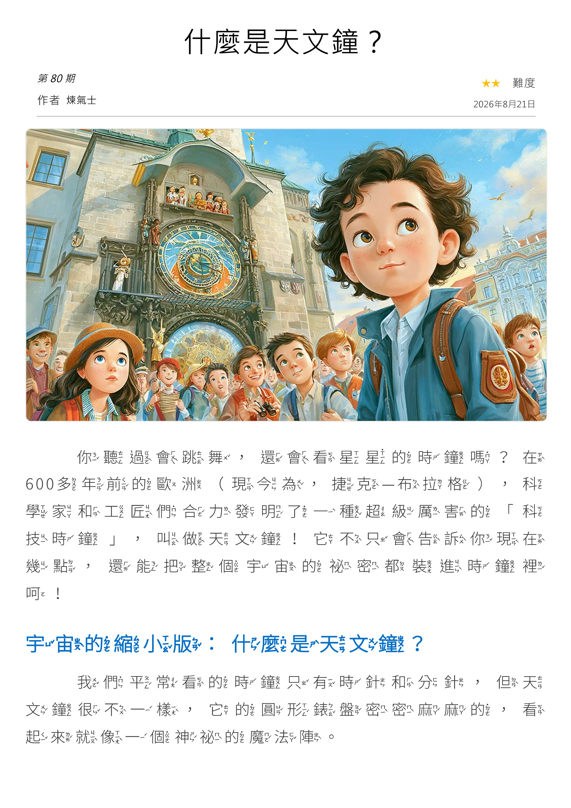

📚 精選探索課程清單
共 3 篇精采閱讀
什麼是天文鐘？
你知道600多年前歐洲發明的天文鐘，是如何把整個宇宙星象裝進時鐘裡的嗎？快來探索神奇齒輪、骷髏人與金雞的整點報時秀！

一起去鹽田
走進臺南北門200年歷史的井仔腳瓦盤鹽田！跟著阿公和小峻一起探索陽光、海風、潮汐與碎瓦片如何變出潔白海鹽的古老智慧！

噓！角鴞聽見了海的約定
跟著小馬搭船回蘭嶼，聆聽角鴞守護者的鳴叫，走進達悟族半穴居地下屋、體驗飛魚季的分工與感恩，許下屬於島嶼的永恆約定！
💡 給老師與小朋友的學習指南
1. 雙模式自在閱讀
可自由切換「原版圖文排版」欣賞精美插圖，或使用「清晰好讀區」搭配語音朗讀與字級放大。
2. 四層次階梯式思維
循序漸進挑戰「字面理解」、「推論理解」、「批判評價」到「應用創造」，每題皆附詳解與文章依據。
3. 50字深度探究與智慧評分
結合生活經驗寫下開放想法，具備即時字數防呆與智慧診斷，給予專屬評語與等第。
4. 一鍵成績匯出與列印
支援學生座號、姓名與作答歷程完整匯出 CSV，或直接列印專屬學習證書。